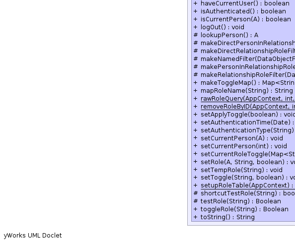

- java.lang.Object
-
- uk.ac.ed.epcc.webapp.AbstractContexed
-
- uk.ac.ed.epcc.webapp.session.AbstractSessionService<A>
-
- Type Parameters:
A-
- All Implemented Interfaces:
- AppContextCleanup, AppContextService<SessionService<A>>, Contexed, SessionService<A>
- Direct Known Subclasses:
- ServletSessionService, SimpleSessionService
public abstract class AbstractSessionService<A extends AppUser> extends AbstractContexed implements SessionService<A>
Abstract base implementation ofSessionServiceA config parameter of the form use_role.role-name defines a role-name mapping the value of the parameter is the actual role queried. A comma separated list of sufficient roles may also be specified.
A role of the form tag%rel[@name] is possessed by a user if that user has relationship (see below) rel against one of the records from factory constructed using tag. If the optional name-filter name is specified it must be one of the records that match that filter.
A role starting with @ denotes a named filter on the
AppUserthat must match a person for them to have the role.The
AppUserFactoryor itsComposites can provide roles by implementingStateRoleProvider.Relationships are configured via the
ConfigServiceby setting: use_relationship.factory-tag.relationship If this is a comma separated list it implies an OR of the component parts. within this AND combinations can be specified as + separated terms. If both OR and AND combinations exist the AND operator binds more tightly.The factory (or its
Composites) can implementAccessRoleProviderto provide relationships.Roles of the form field->remote_relationship denotes a remote filter joined via the reference field field A person has these relationships with the target object if they have the remote_relationship on the object the target references. The remote relationship must be unqualified.
Relationship names containing a period are qualified names the qualifier can be:
- global the relationship is a global role not a relationship.
- boolean Use a boolean filter so all/none relationships match.
- feature Use a boolean filter generated by a feature switch.
- factory-tag un-modified relationship from factory or a named filter from
a
NamedFilterWrapperwrapping the factory. Named filters resolve true/false depending on whether any targets exist that match the filter. - The tag of a
RelationshipProviderfor the target. - The tag of a
AccessRoleProvider
- See Also:
NamedFilterWrapper,RemoteAccessRoleProvider-


 

-
-
Field Summary
Fields Modifier and Type Field and Description static FeatureALLOW_UNKNOWN_RELATIONSHIP_IN_OR_FEATUREstatic FeatureAPPLY_DEFAULT_PERSON_RELATIONSHIP_FILTERstatic FeatureAPPLY_DEFAULT_TARGET_RELATIONSHIP_FILTERstatic java.lang.Stringauth_time_tagstatic java.lang.Stringauth_type_tagstatic FeatureCACHE_RELATIONSHIP_FEATUREstatic java.lang.Stringperson_tagstatic java.lang.StringROLE_FIELDstatic java.lang.StringROLE_LIST_CONFIGstatic java.lang.StringROLE_PERSON_IDstatic java.lang.StringROLE_TABLEstatic FeatureTOGGLE_ROLES_FEATUREstatic java.lang.StringUSE_ROLE_PREFIXProperty prefix to allow role name aliasing.-
Fields inherited from class uk.ac.ed.epcc.webapp.AbstractContexed
conn
-
Fields inherited from interface uk.ac.ed.epcc.webapp.session.SessionService
ADMIN_ROLE
-
-
Constructor Summary
Constructors Constructor and Description AbstractSessionService(AppContext c)
-
Method Summary
All Methods Static Methods Instance Methods Concrete Methods Modifier and Type Method and Description static voidaddRoleByID(AppContext c, int id, java.lang.String role)voidaddSecurityContext(java.util.Map att)Add context parameters for security logging.protected voidcacheRole(java.lang.String role)likesetTempRole(String)but does not callflushRelationships()internal use onlybooleancanHaveRole(A user, java.lang.String role)query the default role set for the specified user.booleancanHaveRole(java.lang.String role)Checks if this session can have the role (ignoring toggle values).protected booleancanLogin(A person)extension point for canLogin check.voidcleanup()AppContextis being closed.voidclearCurrentPerson()clears all record of the current person.voidflushRelationships()clear all cached relationshipsbooleangetApplyToggle()are toggle roles currently enabledjava.util.DategetAuthenticationTime()If there is a current user return the time they authenticated This should only record a user-present authentication not API access via a tokenjava.lang.StringgetAuthenticationType()Get the authentication type used for the session.AgetCurrentPerson()get the current person if knownprotected java.lang.Class<? extends AppUserFactory>getDefaultFactoryClass()static java.util.Set<java.lang.String>getExplicitRoles(AppContext conn, int id)BaseFilter<A>getGlobalRoleFilter(java.util.Set<java.lang.String> skip, java.lang.String role)BaseFilter<A>getGlobalRoleFilter(java.lang.String role)get aBaseFilterfor allAppUsers who have access to a global role.java.util.LocalegetLocale()Get the Locale to use in the current contextAppUserFactory<A>getLoginFactory()get the concrete factory class for the AppUser used by this applicationprotected java.lang.StringgetLoginTable()java.lang.StringgetName()Get the Name for the current user.protected java.lang.IntegergetPersonID()Get the ID of the ccurrent person.<T extends DataObject>
BaseFilter<A>getPersonInRelationshipRoleFilter(DataObjectFactory<T> fac, java.lang.String role, T target)get aBaseFilterrepresenting the set ofAppUsers that are in a particular relationship-role with a target object.BaseFilter<A>getPersonInRoleFilter(java.lang.String... role_list)Get a filter forAppUsers that can be in any of the specified global roles.<T extends DataObject>
BaseFilter<T>getRelationshipRoleFilter(DataObjectFactory<T> fac, java.lang.String role)get aBaseFilterrepresenting the set of target objects that the current user has a particular relationship-role with.<T extends DataObject>
BaseFilter<T>getRelationshipRoleFilter(DataObjectFactory<T> fac, java.lang.String role, BaseFilter<T> fallback)get aBaseFilterrepresenting the set of target objects that the current user has a particular relationship-role with.java.util.Set<java.lang.String>getStandardRoles()Get the set of standard roles.<T extends DataObject>
BaseFilter<T>getTargetInRelationshipRoleFilter(DataObjectFactory<T> fac, java.lang.String role, A person)get aBaseFilterrepresenting the set of targets that a specifiedAppUseris in a particular relationship-role with.java.util.TimeZonegetTimeZone()java.lang.BooleangetToggle(java.lang.String role)get the current State of a role toggle or null if not a toggle rolejava.util.Map<java.lang.String,java.lang.Boolean>getToggleMap()java.util.Set<java.lang.String>getToggleRoles()Get the set of toggle roles this user is capable of assumingjava.lang.Class<SessionService>getType()Returns the type of service the class should be registered under.<T extends DataObject>
booleanhasRelationship(DataObjectFactory<T> fac, T target, java.lang.String role)Method to check relationships on a specified target object.<T extends DataObject>
booleanhasRelationship(DataObjectFactory<T> fac, T target, java.lang.String role, java.util.function.Supplier<java.lang.Boolean> fallback)Method to check relationships on a specified target object.booleanhasRole(java.lang.String name)Has this person a particular SAF role this is used for adding special permissions to SAF usersbooleanhaveCurrentUser()Can we generate an AppUser for this session.booleanisAuthenticated()Tests if the session has already authenticated.booleanisCurrentPerson(A person)does the current session correspond to the person.voidlogOut()Clear current person and any saved stateprotected AlookupPerson()extracted method to look up person from the cached id.protected <T extends DataObject>
BaseFilter<A>makeDirectPersonInRelationshipRoleFilter(DataObjectFactory<T> fac2, java.lang.String role, T target)protected <T extends DataObject>
BaseFilter<T>makeDirectRelationshipRoleFilter(DataObjectFactory<T> fac2, java.lang.String role, A person, BaseFilter<T> def)Make filter for objects in relation to a person for directly implemented rolesprotected <T extends DataObject>
BaseFilter<T>makeNamedFilter(DataObjectFactory<T> fac2, java.lang.String name)look for a named filter from the factory or composites.protected <T extends DataObject>
BaseFilter<A>makePersonInRelationshipRoleFilter(DataObjectFactory<T> fac2, java.lang.String role, T target)protected <T extends DataObject>
BaseFilter<T>makeRelationshipRoleFilter(DataObjectFactory<T> fac2, java.lang.String role, A person, BaseFilter<T> def)actually construct the filter.java.util.Map<java.lang.String,java.lang.Boolean>makeToggleMap()Create the initial map of toggle role statuses.java.lang.StringmapRoleName(java.lang.String name)map role name to a comma separated list of alternative roles to check.static booleanrawRoleQuery(AppContext conn, int id, java.lang.String role)Perform a raw query of a users roles from the databasestatic voidremoveRoleByID(AppContext context, int id, java.lang.String role)voidsetApplyToggle(boolean value)enable/disable the toggle checks for this sessionvoidsetAuthenticationTime(java.util.Date d)Set the authentication timevoidsetAuthenticationType(java.lang.String type)Set the authenticaiton type used for the session.voidsetCurrentPerson(A new_person)Set the current personvoidsetCurrentPerson(int id)Set the current person by idvoidsetCurrentRoleToggle(java.util.Map<java.lang.String,java.lang.Boolean> toggleMap)Remember the current role_map belonging to the current user.voidsetRole(A user, java.lang.String role, boolean value)request a role change for a specified user.voidsetTempRole(java.lang.String role)Set a temporary (not stored to database) role.voidsetToggle(java.lang.String name, boolean value)Set the toggle state of a rolestatic voidsetupRoleTable(AppContext ctx)protected booleanshortcutTestRole(java.lang.String role)perform a non-cached role-check.protected java.lang.BooleantestRole(java.lang.String role)underlying check for role membership.java.lang.BooleantoggleRole(java.lang.String name)Toggle the sate of a role return the new value of the toggle or null if its not a togglable rolejava.lang.StringtoString()-
Methods inherited from class uk.ac.ed.epcc.webapp.AbstractContexed
getContext, getLogger, resetLogger
-
Methods inherited from class java.lang.Object
clone, equals, finalize, getClass, hashCode, notify, notifyAll, wait, wait, wait
-
Methods inherited from interface uk.ac.ed.epcc.webapp.session.SessionService
canHaveRoleFromList, getAttribute, hasRelationship, hasRoleFromList, personHasRelationship, removeAttribute, setAttribute
-
Methods inherited from interface uk.ac.ed.epcc.webapp.Contexed
getContext
-
-
-
-
Field Detail
-
USE_ROLE_PREFIX
public static final java.lang.String USE_ROLE_PREFIX
Property prefix to allow role name aliasing. The property use_role.name defines a role-name mapping.- See Also:
- Constant Field Values
-
TOGGLE_ROLES_FEATURE
public static final Feature TOGGLE_ROLES_FEATURE
-
CACHE_RELATIONSHIP_FEATURE
public static final Feature CACHE_RELATIONSHIP_FEATURE
-
APPLY_DEFAULT_PERSON_RELATIONSHIP_FILTER
public static final Feature APPLY_DEFAULT_PERSON_RELATIONSHIP_FILTER
-
APPLY_DEFAULT_TARGET_RELATIONSHIP_FILTER
public static final Feature APPLY_DEFAULT_TARGET_RELATIONSHIP_FILTER
-
ALLOW_UNKNOWN_RELATIONSHIP_IN_OR_FEATURE
public static final Feature ALLOW_UNKNOWN_RELATIONSHIP_IN_OR_FEATURE
-
ROLE_LIST_CONFIG
public static final java.lang.String ROLE_LIST_CONFIG
- See Also:
- Constant Field Values
-
ROLE_PERSON_ID
public static final java.lang.String ROLE_PERSON_ID
- See Also:
- Constant Field Values
-
ROLE_FIELD
public static final java.lang.String ROLE_FIELD
- See Also:
- Constant Field Values
-
ROLE_TABLE
public static final java.lang.String ROLE_TABLE
- See Also:
- Constant Field Values
-
person_tag
public static final java.lang.String person_tag
- See Also:
- Constant Field Values
-
auth_time_tag
public static final java.lang.String auth_time_tag
- See Also:
- Constant Field Values
-
auth_type_tag
public static final java.lang.String auth_type_tag
- See Also:
- Constant Field Values
-
-
Constructor Detail
-
AbstractSessionService
public AbstractSessionService(AppContext c)
-
-
Method Detail
-
flushRelationships
public void flushRelationships()
clear all cached relationships- Specified by:
flushRelationshipsin interfaceSessionService<A extends AppUser>
-
setupRoleTable
public static void setupRoleTable(AppContext ctx)
-
getLoginFactory
public AppUserFactory<A> getLoginFactory()
Description copied from interface:SessionServiceget the concrete factory class for the AppUser used by this application- Specified by:
getLoginFactoryin interfaceSessionService<A extends AppUser>- Returns:
- AppUserFactory
-
getLoginTable
protected java.lang.String getLoginTable()
- Returns:
-
getDefaultFactoryClass
protected java.lang.Class<? extends AppUserFactory> getDefaultFactoryClass()
-
getToggle
public final java.lang.Boolean getToggle(java.lang.String role)
get the current State of a role toggle or null if not a toggle role- Specified by:
getTogglein interfaceSessionService<A extends AppUser>- Parameters:
role-- Returns:
- Boolean or null
-
setToggle
public void setToggle(java.lang.String name, boolean value)Set the toggle state of a role- Specified by:
setTogglein interfaceSessionService<A extends AppUser>- Parameters:
name- String role to setvalue- boolean value to set
-
toggleRole
public java.lang.Boolean toggleRole(java.lang.String name)
Toggle the sate of a role return the new value of the toggle or null if its not a togglable role- Specified by:
toggleRolein interfaceSessionService<A extends AppUser>- Parameters:
name- String role to toggle- Returns:
- Boolean or null
-
makeToggleMap
public java.util.Map<java.lang.String,java.lang.Boolean> makeToggleMap()
Create the initial map of toggle role statuses. These are roles that a user can switch between. List is defined in the property toggle_roles. Initial value defaults to off but can be changed by setting the boolean parameter toggle_roles.initial_value.role- Returns:
- Map
-
getToggleMap
public java.util.Map<java.lang.String,java.lang.Boolean> getToggleMap()
-
hasRole
public final boolean hasRole(java.lang.String name)
Has this person a particular SAF role this is used for adding special permissions to SAF users- Specified by:
hasRolein interfaceSessionService<A extends AppUser>- Parameters:
name- of role to be tested- Returns:
- true if person has role.
-
mapRoleName
public java.lang.String mapRoleName(java.lang.String name)
map role name to a comma separated list of alternative roles to check. Note the original name should always be checked explicitly first with the alternatives only checked if that role is not found- Specified by:
mapRoleNamein interfaceSessionService<A extends AppUser>- Parameters:
name-- Returns:
- role to use
-
getToggleRoles
public java.util.Set<java.lang.String> getToggleRoles()
Get the set of toggle roles this user is capable of assuming- Specified by:
getToggleRolesin interfaceSessionService<A extends AppUser>- Returns:
- Set
-
canHaveRole
public final boolean canHaveRole(java.lang.String role)
Checks if this session can have the role (ignoring toggle values). No name mapping is applied.- Parameters:
role-- Returns:
- true if role set/permitted
-
shortcutTestRole
protected boolean shortcutTestRole(java.lang.String role)
perform a non-cached role-check. This is called every time a role is checked. If it returns true the role is allowed for that call only. If it returns false the cache and the testRole function are queried. This is to allow per request roles e.g. ones tied to a particular url.- Parameters:
role-- Returns:
-
testRole
protected java.lang.Boolean testRole(java.lang.String role)
underlying check for role membership. Sub-classes can override this. No role mapping is applied- Parameters:
role-- Returns:
-
clearCurrentPerson
public void clearCurrentPerson()
clears all record of the current person. The toggle-map is not cleared. It will have no effect if a new person does not have the role but it allows toggle state to be retained acSross a SU.- Specified by:
clearCurrentPersonin interfaceSessionService<A extends AppUser>
-
logOut
public void logOut()
Description copied from interface:SessionServiceClear current person and any saved state- Specified by:
logOutin interfaceSessionService<A extends AppUser>
-
getCurrentPerson
public final A getCurrentPerson()
Description copied from interface:SessionServiceget the current person if known- Specified by:
getCurrentPersonin interfaceSessionService<A extends AppUser>- Returns:
- AppUser or null
-
getStandardRoles
public java.util.Set<java.lang.String> getStandardRoles()
Description copied from interface:SessionServiceGet the set of standard roles. Used by add-role forms etc.- Specified by:
getStandardRolesin interfaceSessionService<A extends AppUser>- Returns:
-
canLogin
protected boolean canLogin(A person)
extension point for canLogin check. superclasses may want to supress this check in SU mode to allow su to non valid account.- Parameters:
person-- Returns:
-
lookupPerson
protected A lookupPerson()
extracted method to look up person from the cached id. This can be extended by sub-classes e.g. to add login tracking.- Returns:
-
isAuthenticated
public final boolean isAuthenticated()
Description copied from interface:SessionServiceTests if the session has already authenticated. This can return false even ifSessionService.haveCurrentUser()could return true provided it is called first.- Specified by:
isAuthenticatedin interfaceSessionService<A extends AppUser>
-
haveCurrentUser
public final boolean haveCurrentUser()
Description copied from interface:SessionServiceCan we generate an AppUser for this session.- Specified by:
haveCurrentUserin interfaceSessionService<A extends AppUser>- Returns:
- true if we know the current user
-
getPersonID
protected java.lang.Integer getPersonID()
Get the ID of the ccurrent person. This method can be extended to add additional mechanisms to determine that person as it is called by bothhaveCurrentUser()andgetCurrentPerson()- Returns:
-
setCurrentPerson
public void setCurrentPerson(A new_person)
Description copied from interface:SessionServiceSet the current person- Specified by:
setCurrentPersonin interfaceSessionService<A extends AppUser>
-
isCurrentPerson
public boolean isCurrentPerson(A person)
Description copied from interface:SessionServicedoes the current session correspond to the person.- Specified by:
isCurrentPersonin interfaceSessionService<A extends AppUser>- Returns:
- boolean
-
setCurrentPerson
public void setCurrentPerson(int id)
Description copied from interface:SessionServiceSet the current person by id- Specified by:
setCurrentPersonin interfaceSessionService<A extends AppUser>
-
getAuthenticationTime
public java.util.Date getAuthenticationTime()
Description copied from interface:SessionServiceIf there is a current user return the time they authenticated This should only record a user-present authentication not API access via a token- Specified by:
getAuthenticationTimein interfaceSessionService<A extends AppUser>- Returns:
-
setAuthenticationTime
public void setAuthenticationTime(java.util.Date d)
Description copied from interface:SessionServiceSet the authentication time- Specified by:
setAuthenticationTimein interfaceSessionService<A extends AppUser>
-
getAuthenticationType
public java.lang.String getAuthenticationType()
Description copied from interface:SessionServiceGet the authentication type used for the session. This should be one of "password" or a remote auth realm- Specified by:
getAuthenticationTypein interfaceSessionService<A extends AppUser>- Returns:
-
setAuthenticationType
public void setAuthenticationType(java.lang.String type)
Description copied from interface:SessionServiceSet the authenticaiton type used for the session. This should be one of "password" or a remote auth realm.- Specified by:
setAuthenticationTypein interfaceSessionService<A extends AppUser>
-
setCurrentRoleToggle
public void setCurrentRoleToggle(java.util.Map<java.lang.String,java.lang.Boolean> toggleMap)
Description copied from interface:SessionServiceRemember the current role_map belonging to the current user.- Specified by:
setCurrentRoleTogglein interfaceSessionService<A extends AppUser>
-
setTempRole
public void setTempRole(java.lang.String role)
Set a temporary (not stored to database) role.- Specified by:
setTempRolein interfaceSessionService<A extends AppUser>- Parameters:
role-
-
cacheRole
protected void cacheRole(java.lang.String role)
likesetTempRole(String)but does not callflushRelationships()internal use only- Parameters:
role-
-
getName
public java.lang.String getName()
Description copied from interface:SessionServiceGet the Name for the current user. This method can still be used when no login factory is configured.- Specified by:
getNamein interfaceSessionService<A extends AppUser>- Returns:
- String
-
cleanup
public void cleanup()
Description copied from interface:AppContextCleanupAppContextis being closed. Only use this for cleanup that can't be handled by normal garbage collection or for state which is never returned by reference.- Specified by:
cleanupin interfaceAppContextCleanup
-
rawRoleQuery
public static boolean rawRoleQuery(AppContext conn, int id, java.lang.String role)
Perform a raw query of a users roles from the database- Parameters:
conn-id-role-- Returns:
- boolean
-
getExplicitRoles
public static java.util.Set<java.lang.String> getExplicitRoles(AppContext conn, int id)
-
removeRoleByID
public static void removeRoleByID(AppContext context, int id, java.lang.String role) throws DataFault
- Throws:
DataFault
-
addRoleByID
public static void addRoleByID(AppContext c, int id, java.lang.String role) throws DataFault
- Throws:
DataFault
-
setRole
public void setRole(A user, java.lang.String role, boolean value) throws java.lang.UnsupportedOperationException
Description copied from interface:SessionServicerequest a role change for a specified user. This is an optional operation as a session service may not have the ability to modify roles.- Specified by:
setRolein interfaceSessionService<A extends AppUser>- Throws:
java.lang.UnsupportedOperationException
-
getGlobalRoleFilter
public BaseFilter<A> getGlobalRoleFilter(java.lang.String role)
get aBaseFilterfor allAppUsers who have access to a global role. This is the same selection as {@link #canHaveRole(AppUser, String)- Specified by:
getGlobalRoleFilterin interfaceSessionService<A extends AppUser>- Parameters:
role-- Returns:
-
getGlobalRoleFilter
public BaseFilter<A> getGlobalRoleFilter(java.util.Set<java.lang.String> skip, java.lang.String role)
-
canHaveRole
public boolean canHaveRole(A user, java.lang.String role)
Description copied from interface:SessionServicequery the default role set for the specified user. This only queries the roles managed directly by the session service. This method should reflect the state set by setRole and should not be used to query the current roles of the current user. No role mapping is applied- Specified by:
canHaveRolein interfaceSessionService<A extends AppUser>- Returns:
- is role permitted.
-
toString
public java.lang.String toString()
- Overrides:
toStringin classjava.lang.Object
-
getType
public java.lang.Class<SessionService> getType()
Description copied from interface:AppContextServiceReturns the type of service the class should be registered under.- Specified by:
getTypein interfaceAppContextService<SessionService<A extends AppUser>>- Returns:
- registration type
-
getLocale
public java.util.Locale getLocale()
Get the Locale to use in the current context- Specified by:
getLocalein interfaceSessionService<A extends AppUser>- Returns:
- Locale
-
getTimeZone
public java.util.TimeZone getTimeZone()
- Specified by:
getTimeZonein interfaceSessionService<A extends AppUser>
-
getRelationshipRoleFilter
public final <T extends DataObject> BaseFilter<T> getRelationshipRoleFilter(DataObjectFactory<T> fac, java.lang.String role) throws UnknownRelationshipException
Description copied from interface:SessionServiceget aBaseFilterrepresenting the set of target objects that the current user has a particular relationship-role with.- Specified by:
getRelationshipRoleFilterin interfaceSessionService<A extends AppUser>- Parameters:
fac-DataObjectFactoryfor target object- Returns:
BaseFilter- Throws:
UnknownRelationshipException
-
getRelationshipRoleFilter
public final <T extends DataObject> BaseFilter<T> getRelationshipRoleFilter(DataObjectFactory<T> fac, java.lang.String role, BaseFilter<T> fallback)
Description copied from interface:SessionServiceget aBaseFilterrepresenting the set of target objects that the current user has a particular relationship-role with. If the named relationship is defined it is used to narrow the selection of the fallback filter. Otherwise just the fallback filter is returned.- Specified by:
getRelationshipRoleFilterin interfaceSessionService<A extends AppUser>- Parameters:
fac-DataObjectFactoryfor target objectfallback-BaseFilterto use by default.- Returns:
BaseFilter
-
getPersonInRelationshipRoleFilter
public final <T extends DataObject> BaseFilter<A> getPersonInRelationshipRoleFilter(DataObjectFactory<T> fac, java.lang.String role, T target) throws UnknownRelationshipException
Description copied from interface:SessionServiceget aBaseFilterrepresenting the set ofAppUsers that are in a particular relationship-role with a target object. A null target selects allAppUsers that have the specified role with any target matched by the factories defaultDataObjectFactory.getDefaultRelationshipFilter().- Specified by:
getPersonInRelationshipRoleFilterin interfaceSessionService<A extends AppUser>- Returns:
BaseFilter- Throws:
UnknownRelationshipException
-
getTargetInRelationshipRoleFilter
public <T extends DataObject> BaseFilter<T> getTargetInRelationshipRoleFilter(DataObjectFactory<T> fac, java.lang.String role, A person) throws UnknownRelationshipException
Description copied from interface:SessionServiceget aBaseFilterrepresenting the set of targets that a specifiedAppUseris in a particular relationship-role with.- Specified by:
getTargetInRelationshipRoleFilterin interfaceSessionService<A extends AppUser>- Returns:
BaseFilter- Throws:
UnknownRelationshipException
-
makeRelationshipRoleFilter
protected <T extends DataObject> BaseFilter<T> makeRelationshipRoleFilter(DataObjectFactory<T> fac2, java.lang.String role, A person, BaseFilter<T> def) throws UnknownRelationshipException
actually construct the filter. A role can be mapped to a different implementation by setting: use_relationship.factory-tag.role If this is a comma separated list it implies an OR of the component parts. within this AND combinations can be specified as + separated terms. The factory (or itsComposites) can implementAccessRoleProviderto provide roles. Roles of the form field->remote_role denotes a remote filter joined via the reference field field A person has these roles with the targer object if they have the remote_role on the object the target references. The remote role must be unqualified. Role names containing a period are qualified names the qualifier can be:- global the role is a global role not a relationship.
- boolean Use a boolean filter so all/none relationships match.
- factory-tag un-modified role from factory or
Composite. - The tag of a
RelationshipProviderfor the target. - The tag of a
AccessRoleProvider - The tag of a
NamedFilterProviderfor the target.
- Parameters:
fac2- target factoryrole- relationship stringperson- person to query (null for current person)def- default query to use if no definition (pass null to throw exception)- Returns:
- Throws:
UnknownRelationshipException
-
makePersonInRelationshipRoleFilter
protected <T extends DataObject> BaseFilter<A> makePersonInRelationshipRoleFilter(DataObjectFactory<T> fac2, java.lang.String role, T target) throws UnknownRelationshipException
- Throws:
UnknownRelationshipException
-
makeDirectRelationshipRoleFilter
protected <T extends DataObject> BaseFilter<T> makeDirectRelationshipRoleFilter(DataObjectFactory<T> fac2, java.lang.String role, A person, BaseFilter<T> def) throws UnknownRelationshipException
Make filter for objects in relation to a person for directly implemented roles- Parameters:
fac2-role-- Throws:
UnknownRelationshipException
-
makeNamedFilter
protected <T extends DataObject> BaseFilter<T> makeNamedFilter(DataObjectFactory<T> fac2, java.lang.String name)
look for a named filter from the factory or composites.
-
makeDirectPersonInRelationshipRoleFilter
protected <T extends DataObject> BaseFilter<A> makeDirectPersonInRelationshipRoleFilter(DataObjectFactory<T> fac2, java.lang.String role, T target) throws UnknownRelationshipException
- Throws:
UnknownRelationshipException
-
hasRelationship
public <T extends DataObject> boolean hasRelationship(DataObjectFactory<T> fac, T target, java.lang.String role) throws UnknownRelationshipException
Description copied from interface:SessionServiceMethod to check relationships on a specified target object. Note thatSessionService.getRelationshipRoleFilter(DataObjectFactory, String)is sufficient for this in combination withDataObjectFactory.matches(BaseFilter, DataObject)but adding a method toSessionServicereduces code duplication and adds to possibility of caching the results.- Specified by:
hasRelationshipin interfaceSessionService<A extends AppUser>- Parameters:
fac-DataObjectFactorytarget-DataObjectto test for relationshiprole- String role to test- Returns:
- boolean true if has relationship
- Throws:
UnknownRelationshipException
-
hasRelationship
public <T extends DataObject> boolean hasRelationship(DataObjectFactory<T> fac, T target, java.lang.String role, java.util.function.Supplier<java.lang.Boolean> fallback)
Description copied from interface:SessionServiceMethod to check relationships on a specified target object.- Specified by:
hasRelationshipin interfaceSessionService<A extends AppUser>- Parameters:
fac-DataObjectFactorytarget-DataObjectto test for relationshiprole- String role to testfallback-Suppliervalue to use if relationship undefined- Returns:
- boolean true if has relationship
-
setApplyToggle
public void setApplyToggle(boolean value)
Description copied from interface:SessionServiceenable/disable the toggle checks for this session- Specified by:
setApplyTogglein interfaceSessionService<A extends AppUser>
-
getApplyToggle
public boolean getApplyToggle()
Description copied from interface:SessionServiceare toggle roles currently enabled- Specified by:
getApplyTogglein interfaceSessionService<A extends AppUser>- Returns:
-
getPersonInRoleFilter
public BaseFilter<A> getPersonInRoleFilter(java.lang.String... role_list)
Description copied from interface:SessionServiceGet a filter forAppUsers that can be in any of the specified global roles. as defined inSessionService.canHaveRoleFromList(AppUser, String...)- Specified by:
getPersonInRoleFilterin interfaceSessionService<A extends AppUser>- Returns:
-
addSecurityContext
public void addSecurityContext(java.util.Map att)
Description copied from interface:SessionServiceAdd context parameters for security logging.- Specified by:
addSecurityContextin interfaceSessionService<A extends AppUser>
-
-